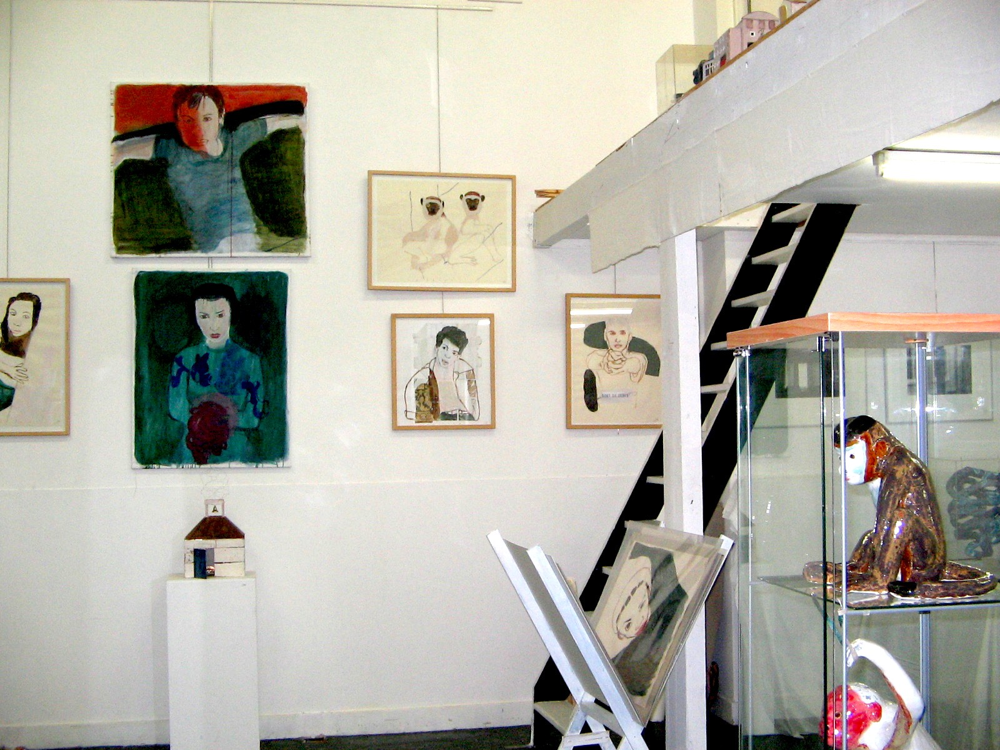

Ik maak portretten en beelden aan de hand van foto’s. Voor de portretten, in gouache of acryl, ga ik uit van foto’s uit muziek- en filmbladen.
Daarbij kies ik vaak voor jong talent dat nog niet zo beroemd is en vol verwachting de camera in kijkt. Ik schilder hen zonder opsmuk, zoals ik me voorstel dat zijn in het dagelijks leven. Als de buren. niet als beroemdheden.
Voor mijn beelden gebruik ik vooral mijn fantasie, soms aangevuld met foto’s.
Zo heb ik altijd mijn modellen bij de hand en hoef ik mij niet bezig te houden met het zoeken naar een onderwerp.In mijn tekeningen kies ik vaak voor jong aanstormend talent en raak geïnspireerd door de onbevangen, verwachtingsvolle manier waarop zij de wereld in kijken.
In al mijn werk probeer ik iets van ontroering te laten zien en ook iets van humor.
Instagram: @jokehak1403